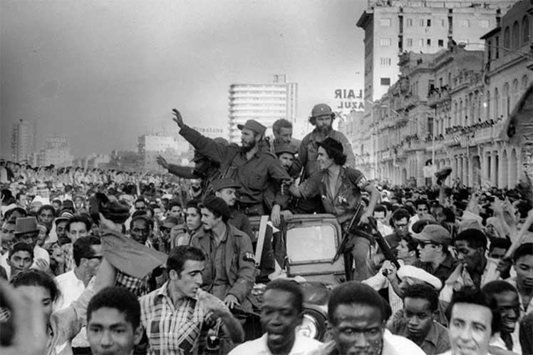

.svg.png)
A kommunista hatalomátvétel
A kubai forradalom a 20. század egyik legmeghatározóbb történelmi eseménye volt, amely gyökeresen megváltoztatta a szigetország társadalmi, gazdasági és politikai berendezkedését. Az 1950-es években Kuba komoly belső feszültségekkel küzdött, hiszen miközben a főváros a luxus és a turizmus központjaként virágzott, a vidéki lakosság mélyszegénységben, földtelenül és az alapvető ellátások nélkül élt. Fulgencio Batista diktatórikus rendszere erőszakkal nyomta el az elégedetlenkedőket, ami megágyazott a Fidel Castro és Che Guevara vezette felkelésnek. A széles körű népi támogatásnak köszönhetően a forradalmárok végül 1959 januárjában átvették a hatalmat, és egy radikálisan új, szocialista állammodell kiépítésébe kezdtek. A hatalomváltást követően bevezetett kommunista berendezkedés számos olyan átfogó reformot hozott, amelyeket a rendszer támogatói a forradalom legnagyobb társadalmi vívmányaiként tartanak számon. Az új kormány egyik legelső és legsikeresebb lépése az 1961-es országos analfabétizmus-ellenes kampány volt, amelynek keretében fiatal önkéntesek tízezrei tanították meg írni és olvasni a vidéki lakosságot, ezzel szinte teljesen felszámolva az írástudatlanságot. Ezzel párhuzamosan egy teljesen ingyenes, egyetemes és az állampolgárok jogán hozzáférhető egészségügyi rendszert hoztak létre. A megelőzésre és a háziorvosi hálózatra épülő modell révén Kuba csecsemőhalandósági rátája a legfejlettebb országok szintjére süllyedt, miközben a születéskor várható élettartam jelentősen megemelkedett.

Ezt az orvosi szaktudást Kuba ráadásul humanitárius missziók keretében, úgynevezett orvosi diplomáciával a világ számos más fejlődő országával is megosztotta. A kulturális és egészségügyi előrelépés mellett a gazdasági struktúrát is a társadalmi egyenlőség eszméje mentén formálták át. Az agrárreformok során felszámolták a korábbi nagybirtokrendszert, az amerikai vállalatok és a hazai elit tulajdonában lévő földeket, gyárakat, valamint bankokat pedig államosították, hogy a javakat újra elosszák a korábban kirekesztett rétegek között. Az oktatási rendszer teljes államosításával és ingyenessé tételével a legalsóbb társadalmi osztályok gyermekei előtt is megnyílt a lehetőség a magas szintű egyetemi, tudományos és művészeti képzésekre. Emellett a rendszer hivatalosan is betiltotta a faji szegregációt, és jelentős jogi lépéseket tett a nők egyenjogúsítása érdekében. Bár a kubai modellt a későbbi évtizedekben az amerikai embargó, a Szovjetunió összeomlása miatti gazdasági válságok, valamint a politikai pluralizmus és a személyes szabadságjogok korlátozása miatt rengeteg nemzetközi bírálat érte, a forradalom által kiépített szociális háló és az esélyegyenlőségre való törekvés a mai napig az ország történelmének legmeghatározóbb pillérei maradtak.